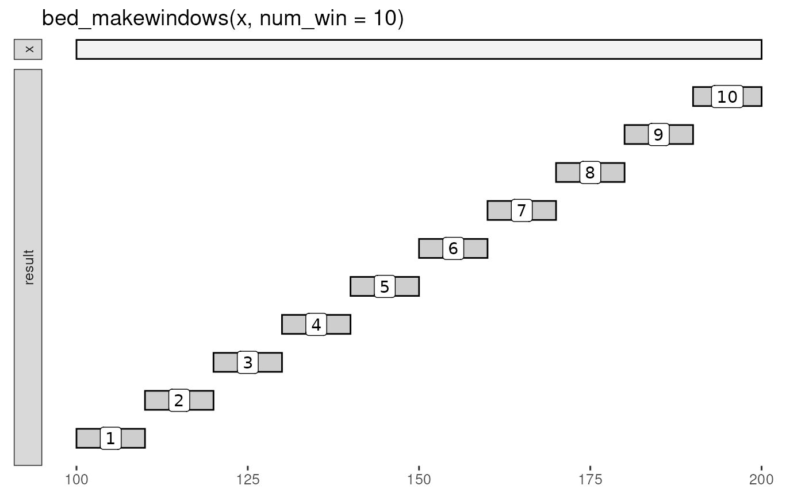

Divide intervals into new sub-intervals ("windows").
bed_makewindows( x, genome = NULL, win_size = 0, step_size = 0, num_win = 0, reverse = FALSE )
| x | |
|---|---|
| genome | this argument has been deprecated and is not used |
| win_size | divide intervals into fixed-size windows |
| step_size | size to step before next window |
| num_win | divide intervals to fixed number of windows |
| reverse | reverse window numbers |
tbl_interval() with .win_id column that contains a numeric
identifier for the window.
The name and .win_id columns can be used to create new
interval names (see 'namenum' example below) or in subsequent
group_by operations (see vignette).
Other utilities:
bed12_to_exons(),
bound_intervals(),
flip_strands(),
interval_spacing()
x <- trbl_interval( ~chrom, ~start, ~end, ~name, ~score, ~strand, "chr1", 100, 200, 'A', '.', '+' ) bed_glyph(bed_makewindows(x, num_win = 10), label = '.win_id')# Fixed number of windows bed_makewindows(x, num_win = 10)#> # A tibble: 10 x 7 #> chrom start end name score strand .win_id #> <chr> <int> <int> <chr> <chr> <chr> <int> #> 1 chr1 100 110 A . + 1 #> 2 chr1 110 120 A . + 2 #> 3 chr1 120 130 A . + 3 #> 4 chr1 130 140 A . + 4 #> 5 chr1 140 150 A . + 5 #> 6 chr1 150 160 A . + 6 #> 7 chr1 160 170 A . + 7 #> 8 chr1 170 180 A . + 8 #> 9 chr1 180 190 A . + 9 #> 10 chr1 190 200 A . + 10# Fixed window size bed_makewindows(x, win_size = 10)#> # A tibble: 10 x 7 #> chrom start end name score strand .win_id #> <chr> <int> <int> <chr> <chr> <chr> <int> #> 1 chr1 100 110 A . + 1 #> 2 chr1 110 120 A . + 2 #> 3 chr1 120 130 A . + 3 #> 4 chr1 130 140 A . + 4 #> 5 chr1 140 150 A . + 5 #> 6 chr1 150 160 A . + 6 #> 7 chr1 160 170 A . + 7 #> 8 chr1 170 180 A . + 8 #> 9 chr1 180 190 A . + 9 #> 10 chr1 190 200 A . + 10# Fixed window size with overlaps bed_makewindows(x, win_size = 10, step_size = 5)#> # A tibble: 20 x 7 #> chrom start end name score strand .win_id #> <chr> <int> <int> <chr> <chr> <chr> <int> #> 1 chr1 100 110 A . + 1 #> 2 chr1 105 115 A . + 2 #> 3 chr1 110 120 A . + 3 #> 4 chr1 115 125 A . + 4 #> 5 chr1 120 130 A . + 5 #> 6 chr1 125 135 A . + 6 #> 7 chr1 130 140 A . + 7 #> 8 chr1 135 145 A . + 8 #> 9 chr1 140 150 A . + 9 #> 10 chr1 145 155 A . + 10 #> 11 chr1 150 160 A . + 11 #> 12 chr1 155 165 A . + 12 #> 13 chr1 160 170 A . + 13 #> 14 chr1 165 175 A . + 14 #> 15 chr1 170 180 A . + 15 #> 16 chr1 175 185 A . + 16 #> 17 chr1 180 190 A . + 17 #> 18 chr1 185 195 A . + 18 #> 19 chr1 190 200 A . + 19 #> 20 chr1 195 200 A . + 20# reverse win_id bed_makewindows(x, win_size = 10, reverse = TRUE)#> # A tibble: 10 x 7 #> chrom start end name score strand .win_id #> <chr> <int> <int> <chr> <chr> <chr> <int> #> 1 chr1 100 110 A . + 10 #> 2 chr1 110 120 A . + 9 #> 3 chr1 120 130 A . + 8 #> 4 chr1 130 140 A . + 7 #> 5 chr1 140 150 A . + 6 #> 6 chr1 150 160 A . + 5 #> 7 chr1 160 170 A . + 4 #> 8 chr1 170 180 A . + 3 #> 9 chr1 180 190 A . + 2 #> 10 chr1 190 200 A . + 1# bedtools 'namenum' wins <- bed_makewindows(x, win_size = 10) dplyr::mutate(wins, namenum = stringr::str_c(name, '_', .win_id))#> # A tibble: 10 x 8 #> chrom start end name score strand .win_id namenum #> <chr> <int> <int> <chr> <chr> <chr> <int> <chr> #> 1 chr1 100 110 A . + 1 A_1 #> 2 chr1 110 120 A . + 2 A_2 #> 3 chr1 120 130 A . + 3 A_3 #> 4 chr1 130 140 A . + 4 A_4 #> 5 chr1 140 150 A . + 5 A_5 #> 6 chr1 150 160 A . + 6 A_6 #> 7 chr1 160 170 A . + 7 A_7 #> 8 chr1 170 180 A . + 8 A_8 #> 9 chr1 180 190 A . + 9 A_9 #> 10 chr1 190 200 A . + 10 A_10